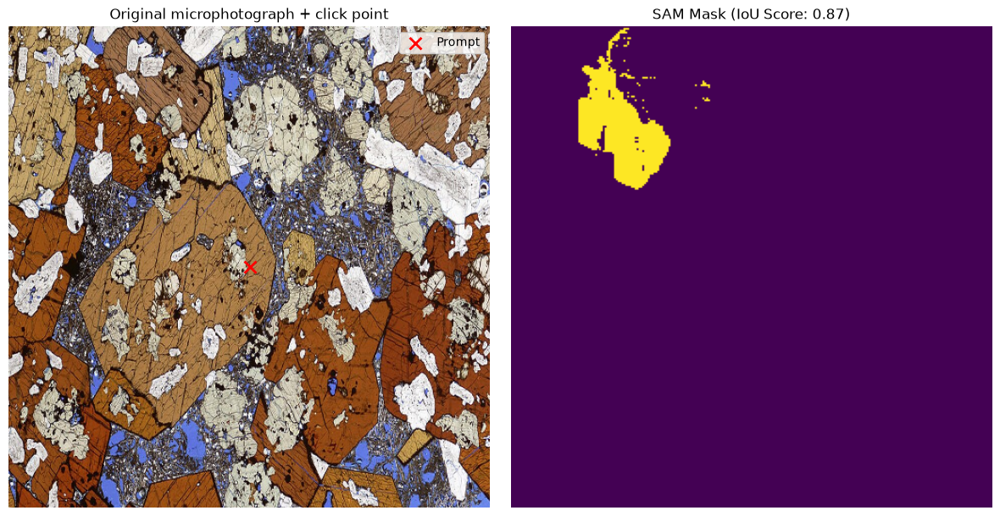

# Install dependencies
!pip install -q --upgrade keras-hub
!pip install -q --upgrade keras
!pip install -q opencv-python matplotlibModern Image Segmentation: Interactive & Automated
Learning Objectives
- Contrast semantic, instance, and panoptic segmentation techniques.
- Use the Segment Anything Model (SAM) for interactive, prompt-based (click/point) segmentation.
- Perform quantitative spatial analysis (specimen area, coverage ratio) using output masks.
- Learn the fundamentals of automated semantic segmentation (e.g. building a U-Net architecture) in Keras 3.
import os
os.environ["KERAS_BACKEND"] = "jax"
import keras
import keras_hub
import jax
import numpy as np
import matplotlib.pyplot as plt
import cv2
import urllib.request
# devices = jax.devices()
# print("Available devices:", devices)
# is_cpu_only = all(d.platform == "cpu" for d in devices)
SAM_PRESET = "sam_base_sa1b"
IMAGE_SIZE = (512, 512)
Available devices: [CpuDevice(id=0)]
⚠️ WARNING: CPU Fallback mode. Downscaling resolution for performance.1. Interactive Segmentation with SAM
The Segment Anything Model (SAM) from Meta allows researchers to extract high-quality masks from images using prompt markers (points or bounding boxes).
We will download a rock thin-section micrograph, load SAM via Keras Hub, define a coordinate prompt, and perform segmentations.
import kagglehub
kagglehub.login()print(f"Loading Segment Anything preset: {SAM_PRESET}...")
model = keras_hub.models.SAMImageSegmenter.from_preset(SAM_PRESET)
# Download thin-section image
image_url = "https://upload.wikimedia.org/wikipedia/commons/thumb/9/9f/Photomicrograph_of_rock_thin_section_Gabbroic_inclusion.jpg/960px-Photomicrograph_of_rock_thin_section_Gabbroic_inclusion.jpg"
req = urllib.request.Request(image_url, headers={"User-Agent": "Mozilla/5.0"})
with urllib.request.urlopen(req) as resp, open("thin_section.jpg", "wb") as f:
f.write(resp.read())
# Preprocess image to input size
raw_img = cv2.imread("thin_section.jpg")
raw_img = cv2.cvtColor(raw_img, cv2.COLOR_BGR2RGB)
raw_img = cv2.resize(raw_img, IMAGE_SIZE)
input_image = np.expand_dims(raw_img, axis=0) # Add batch dimension
# Choose a coordinate in pixel space to prompt ("click")
center_x = IMAGE_SIZE[0] // 2
center_y = IMAGE_SIZE[1] // 2
input_points = np.array([[ [center_x, center_y] ]], dtype=np.float32)
input_labels = np.array([[ 1 ]], dtype=np.int32) # 1 = Foreground point, 0 = Background
print(f"Executing inference with prompt click at: ({center_x}, {center_y})")
outputs = model.predict({
"images": input_image,
"points": input_points,
"labels": input_labels
})
masks = outputs["masks"][0]
scores = outputs["iou_pred"][0]
best_idx = np.argmax(scores)
best_mask = masks[best_idx]Loading Segment Anything preset: sam_base_sa1b...
Executing inference with prompt click at: (256, 256)2026-07-22 23:15:21.881857: E external/local_xla/xla/stream_executor/cuda/cuda_platform.cc:51] failed call to cuInit: INTERNAL: CUDA error: Failed call to cuInit: UNKNOWN ERROR (303)1/1 ━━━━━━━━━━━━━━━━━━━━ 11s 11s/step
2. Quantitative Spatial Analysis
By thresholding the output logits to a binary mask, we can easily calculate metrics such as surface area coverage ratios, which are vital in domains like geology (porosity estimation) or biology (cell area fraction).
# Convert logit scores to binary mask
binary_mask = (best_mask > 0.0).astype(int)
foreground_pixels = np.sum(binary_mask)
total_pixels = binary_mask.size
coverage_ratio = (foreground_pixels / total_pixels) * 100
print("--- QUANTITATIVE METRICS ---")
print(f"Total Pixels: {total_pixels}")
print(f"Segmented Feature Pixels: {foreground_pixels}")
print(f"Porosity/Coverage Ratio: {coverage_ratio:.2f}%")
# Visualise thin section and segmented mask side-by-side
fig, (ax1, ax2) = plt.subplots(1, 2, figsize=(12, 6))
ax1.imshow(raw_img)
ax1.scatter([center_x], [center_y], c='red', marker='x', s=100, linewidth=2, label='Prompt')
ax1.set_title("Original microphotograph + click point")
ax1.legend()
ax1.axis('off')
ax2.imshow(binary_mask, cmap='viridis')
ax2.set_title(f"SAM Mask (IoU Score: {scores[best_idx]:.2f})")
ax2.axis('off')
plt.tight_layout()
plt.show()--- QUANTITATIVE METRICS ---
Total Pixels: 65536
Segmented Feature Pixels: 1836
Porosity/Coverage Ratio: 2.80%
3. Automated Semantic Segmentation
While interactive models are powerful, many tasks require automated segmentations. To achieve this, researchers build models like U-Nets (or pre-trained SegFormers) to make dense, pixel-level classification predictions across entire datasets.
Here is how you can compile a custom U-Net segmentation network in Keras 3:
def build_unet(input_shape=(256, 256, 3), num_classes=1):
inputs = keras.Input(shape=input_shape)
# Encoder
f1 = keras.layers.Conv2D(16, 3, activation="relu", padding="same")(inputs)
p1 = keras.layers.MaxPooling2D(2)(f1)
f2 = keras.layers.Conv2D(32, 3, activation="relu", padding="same")(p1)
p2 = keras.layers.MaxPooling2D(2)(f2)
# Bottleneck
b = keras.layers.Conv2D(64, 3, activation="relu", padding="same")(p2)
# Decoder
u1 = keras.layers.UpSampling2D(2)(b)
c1 = keras.layers.Conv2D(32, 3, activation="relu", padding="same")(u1)
u2 = keras.layers.UpSampling2D(2)(c1)
c2 = keras.layers.Conv2D(16, 3, activation="relu", padding="same")(u2)
# Output Class Prediction Map
outputs = keras.layers.Conv2D(num_classes, 1, activation="sigmoid", padding="same")(c2)
return keras.Model(inputs, outputs, name="unet")
unet_model = build_unet()
unet_model.summary()Model: "unet"
┏━━━━━━━━━━━━━━━━━━━━━━━━━━━━━━━━━┳━━━━━━━━━━━━━━━━━━━━━━━━┳━━━━━━━━━━━━━━━┓ ┃ Layer (type) ┃ Output Shape ┃ Param # ┃ ┡━━━━━━━━━━━━━━━━━━━━━━━━━━━━━━━━━╇━━━━━━━━━━━━━━━━━━━━━━━━╇━━━━━━━━━━━━━━━┩ │ input_layer_66 (InputLayer) │ (None, 256, 256, 3) │ 0 │ ├─────────────────────────────────┼────────────────────────┼───────────────┤ │ conv2d_18 (Conv2D) │ (None, 256, 256, 16) │ 448 │ ├─────────────────────────────────┼────────────────────────┼───────────────┤ │ max_pooling2d (MaxPooling2D) │ (None, 128, 128, 16) │ 0 │ ├─────────────────────────────────┼────────────────────────┼───────────────┤ │ conv2d_19 (Conv2D) │ (None, 128, 128, 32) │ 4,640 │ ├─────────────────────────────────┼────────────────────────┼───────────────┤ │ max_pooling2d_1 (MaxPooling2D) │ (None, 64, 64, 32) │ 0 │ ├─────────────────────────────────┼────────────────────────┼───────────────┤ │ conv2d_20 (Conv2D) │ (None, 64, 64, 64) │ 18,496 │ ├─────────────────────────────────┼────────────────────────┼───────────────┤ │ up_sampling2d (UpSampling2D) │ (None, 128, 128, 64) │ 0 │ ├─────────────────────────────────┼────────────────────────┼───────────────┤ │ conv2d_21 (Conv2D) │ (None, 128, 128, 32) │ 18,464 │ ├─────────────────────────────────┼────────────────────────┼───────────────┤ │ up_sampling2d_1 (UpSampling2D) │ (None, 256, 256, 32) │ 0 │ ├─────────────────────────────────┼────────────────────────┼───────────────┤ │ conv2d_22 (Conv2D) │ (None, 256, 256, 16) │ 4,624 │ ├─────────────────────────────────┼────────────────────────┼───────────────┤ │ conv2d_23 (Conv2D) │ (None, 256, 256, 1) │ 17 │ └─────────────────────────────────┴────────────────────────┴───────────────┘
Total params: 46,689 (182.38 KB)
Trainable params: 46,689 (182.38 KB)
Non-trainable params: 0 (0.00 B)